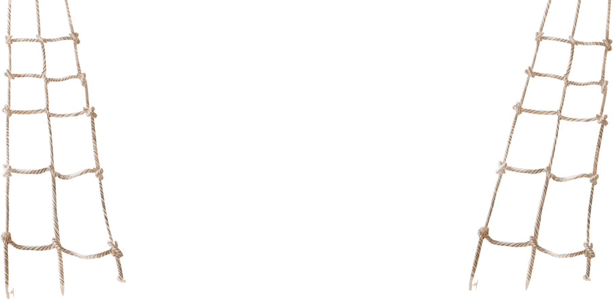
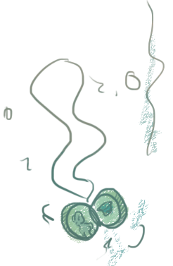
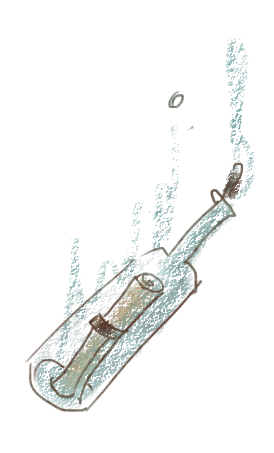

<!doctype html>
<html class="no-js" lang="en">
  <head>
    <meta charset="utf-8" />
    <meta name="viewport" content="width=device-width, initial-scale=1.0" />
    <title>Макароны по-флотски</title>
    <link rel="stylesheet" href="css/styles2.css"/>
    <script src="js/jquery.js"></script>
  </head>
  <body>
  <div id="container" class="container">
  <ul id="scene" class="scene"
  data-calibrate-x="true"
  data-calibrate-y="true"
  data-invert-x="true"
  data-invert-y="true"
  data-limit-x="false"
  data-limit-y="false"
  data-scalar-x="11"
  data-scalar-y="14"
  data-friction-x="1"
  data-friction-y="1"
  data-origin-x="0.0"
  data-origin-y="1.0">
  <li id="logo" class="layer" data-depth="0.30"></li>
  <li id="lighter" class="layer" data-depth="0.08"></li>
  <li id="wave" class="layer" data-depth="0.13"></li>
  <li id="wave" class="layer" data-depth="0.16"></li>
  <li id="wave" class="layer" data-depth="0.19"></li>
  <li id="wave" class="layer" data-depth="0.22"></li>
  <li id="wave" class="layer" data-depth="0.25"></li>
  <li id="ropes" class="layer" data-depth="0.40"></li>
  <li class="layer" id="sailor" data-depth="0.5"></li>
  <li class="layer" id="popup" data-depth="0.55"></li>
  <li class="layer" id="seagull1" data-depth="0.9"></li>
  <li class="layer" id="seagull2" data-depth="0.95"></li>
  <li class="layer" id="kulon" data-depth="0.08"></li>
  <li class="layer" id="k_popup" data-depth="0.08"></li>
  <li class="layer" id="butilka" data-depth="0.09">
    
  </li>
  <li class="layer" id="b_popup" data-depth="0.09"><div class="p_text"><p>На просторах бездонного интернета можно прочитать много версий того, откуда произошли макароны по-флотски. В погоне за истиной, команда нашла интереснейшую “альтернативную историю” советской классики.
Исконно советское блюдо, данный рецепт не мог быть создан итальянскими иммигрантами 16го-17го века, да и, судя по даным о советсвкой пищевой промышленности 40х годов, не использовался на флоте и в Великую Отечественую Войну. В чем же дело? На самом-то деле, в самих макаронах.
Этот столь доступный продукт еще в 19м веке в Российской Империи считался деликатесом. Ведь для производства скатанных трубочек из сушеного теста необходимы соответствующие технологии, которые смогли стать общедоступными лишь  во второй половине 20го века, после перехода советской промышлености на мирное производство.
Об этом, и многих других открытиях пишет domovest.ru</p></div>
  </li>
  <li id="instag" class="layer" data-depth="1">Here will go images</li>

  </ul>
  </div>

<script src="js/parallax.js"></script>
<script>var scene = document.getElementById('scene');
var parallax = new Parallax(scene);</script>

<script type="text/javascript" src="js/instafeed.min.js"></script>
<script type="text/javascript">
    var feed = new Instafeed({
        get: 'tagged',
        tagName: 'awesome',
        clientId: 'YOUR_CLIENT_ID',
        template: '<a href="{{link}}"></a>'
    });
    feed.run();
</script>
<script>$("#popup").click(function(){
   jQuery(this).toggleClass('active');
});
$("#kulon").click(function () {
    $("#k_popup").toggleClass('active');
  });
$("#butilka").click(function () {
      $("#b_popup").toggleClass('active');
    });
    </script>
  </body>
</html>
